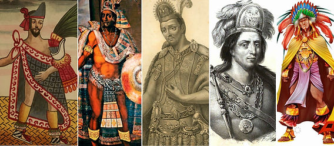
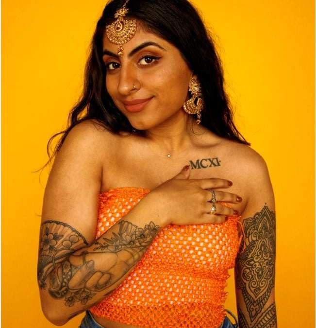
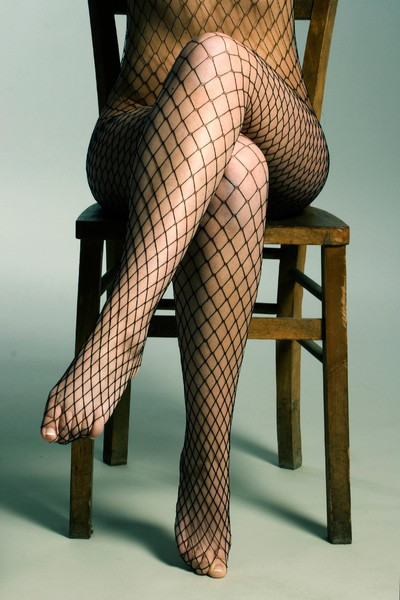
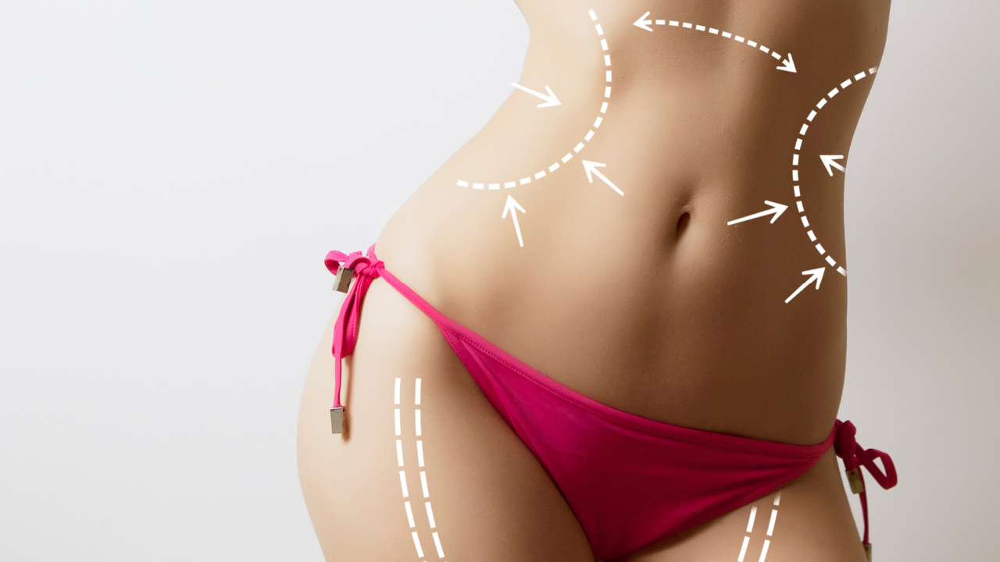

En mi opinión, David Le Breton muestra que el cuerpo no es solo algo biológico, sino que también adquiere significado según la sociedad y la cultura en que vivimos. Me parece interesante porque muchas ideas que consideramos normales (como la belleza, la salud o la forma correcta de vestir) en realidad han sido construidas socialmente. El texto también invita a cuestionar los modelos que privilegian cuerpos jóvenes, “perfectos” y productivos, ya que pueden excluir otras formas de vivir y experimentar el cuerpo.
Unidad 1
Una aproximación al cuerpo como experiencia social, cultural y como objeto dentro de la sociedad de consumo.
¿Qué entiendo por cuerpo?
Primera mirada
Cuerpo como construcción social


Segunda mirada
Cuerpo como consumo


En mi opinión, Baudrillard permite ver cómo, dentro de la sociedad de consumo, el cuerpo de las mujeres suele ser tratado más como un producto que como parte de una persona con identidad, decisiones y experiencias propias. La publicidad, la moda y las redes sociales presentan constantemente cuerpos femeninos como imágenes que deben ser atractivas, jóvenes y “perfectas” para llamar la atención o vender algo. Esto puede reducir a las mujeres a su apariencia física y hacer que se valore más cómo se ven que lo que piensan, sienten o hacen.
Me parece importante cuestionar esta idea porque no debería existir una obligación de cumplir con un modelo de belleza para ser aceptada. El cuerpo no es mercancía ni decoración: es parte de una persona y merece respeto, diversidad y autonomía.